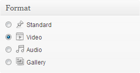
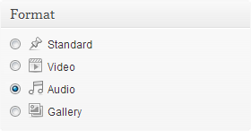
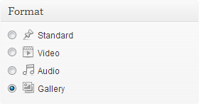
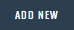

Thank you very much for purchasing 15Zine. The following documentation contains almost everything related to 15Zine, and if anything important has been overlooked, it will be added over time. Let's start :)
1- After downloading the theme from Themeforest, extract the contents of the downloaded zip file to your computer.
2- In your Wordpress backend, go to Appearance -> Themes -> Install Themes (top tab).
3- Click the upload option (just under the tabs) and go to the folder where you extracted the previous zip file, and select the file called "15zine.zip"
4- Click on "Install Now" and once completed select "Activate".
5- You will see a notice about installing plugins that the theme uses. Click on "Begin installing plugins".
6- Tick all of the plugins listed and then using the drop down underneath, select Install. Apply.
7- Once they are all installed, click on "Return to Required Plugins installer" and tick all of the plugins once more, but this time, select "Activate" from the drop down and hit apply.
If you are installing 15Zine on a website that already has images uploaded, please follow these important steps once 15Zine is activated:
After logging into your admin Wordpress account:
This fixes all your existing images to work with 15Zine and only needs to be done once. You can delete the plugin after running it, as any images uploaded after 15Zine is active will have the appropriate thumbnails created automatically.
After logging into your admin Wordpress account:
1- Go to Appearance → Logos
2- Click the button each of the logo options
3- Select/Upload your logo image and hit “Submit” button
4- Press the “Save Changes” button
You have two main homepage options with 15Zine:
1- Make the homepage show the latest posts with the option of a grid/slider on top. To learn how to do this, go the the Homepage Latest Posts Style section.
2- Build your own homepage using the "15Zine Homepage Builder". To learn how to do this, go the the 15Zine Homepage Builder section.
To set up the homepage to show the latest posts:
1- In your Wordpress backend go To "Settings -> Reading"
2- Select "Your Latest Posts" in the "Front Page Displays" option.
3- Go To "Appearance -> Theme Options -> Homepage"
4- Select a blog style to use on the homepage.
5- Optional: To add a grid or slider at the top of the posts, select an option from "Featured Posts
6- Optional: To only show a specific category or multiple categories, tick the categories you want to show on the grid/slider in the "Grid/Slider Category Filter" option
15Zine comes with a unique homepage drag & drop builder that does not use shortcodes or need any type of code to be inputted (Horrah!) and allows you to quickly create or change complicated homepage layouts within a few clicks.
You can mix and match the modules, grids, ad blocks and special module that accepts custom code (HTML, shortcodes, special ads, etc)
To build a unique homepage using the "15Zine Homepage Drag & Drop Builder"
1- Add/Edit a page with a suitable name
2- In the "Page Attributes" box, set the template to "15Zine Drag & Drop Builder"
3- Scroll down to see the "15Zine Drag & Drop Builder" box
There are five sections that compose a 15Zine Homepage. They are all optional.Section A is a full-width section.
Section A2 is a section that is full-screen width.
Section B is a section that has a sidebar.
Section C is a full-width section.
4- Click on "Add New" In any of the sections and you will be able to select the type of module to use and select the details for that module.
5- Once all your modules are setup Publish/Update your page.
6- Go to Appearance → Widgets
7- Depending if you added modules to Sections B, you will now see two new sidebar areas called "Section B Sidebar (Page Name)", add widgets to this sidebar and it will appear next to the modules set in those sections. Alternatively, you can use the "Custom Sidebar" option inside the "Page options" metabox to select an existing sidebar.
8- In your Wordpress backend go To "Settings -> Reading"
9- In the "Front Page Displays" choose the "A static page (select below)" option and in the "Front Page" setting choose the homepage page you created earlier.
You can give categories/tags/blog style homepages the option to show posts using an infinite scroll system.
To enable infinite scroll on a blog style homepage
1- Go to Appearance → Theme Options → Homepage
2- Under the "Infinite Scroll" option, select an option from the dropdown. It can be either set to "Off / Infinite Scroll / Infinite Scroll with Load More Button".
To enable infinite scroll on a category/tag page
1- Go to Posts → Categories or Tags
2- Add/Edit a category/tag and you will see an "Infinite Scroll" option, select an option from the dropdown. It can be either set to "Off / Infinite Scroll / Infinite Scroll with Load More Button" and save the category settings.
Couldn't be simpler.
To set the base global style for the entire website, including background images/colors and color for menu hovers, review colors. You can change them in the theme options.
These options are applied to the entire website, however, if a category has its own global color and/or background options, then they will override whatever is set in the global style options.
1- Go to Appearance → Theme Options → Design
2- Set global colors and/or global background options
15Zine can use any of the several hundreds of Google fonts available. You can select one font for the body text (often a clean, light font) and another font for everything else (menu font, titles, etc).
15Zine comes with a dropdown option of recommended fonts:
1- Go to Appearance -> Theme Options -> Typography
2- Select a font for the heading and one for the body
3- Click on “Save Changes”
To use a Google Font not in the dropdown lists:
1- Go to Appearance -> Theme Options -> Typography
2- From the dropdown of the font options, select "Other Google Font" and then enter the code provided by Google Fonts in Quickuse Step 4 into the “Other Google Font” box that appears, but without the “Font-family:” part. Example if step 4 says font-family: 'Cantora One', sans-serif; you should only enter 'Cantora One', sans-serif;
3- Click on “Save Changes”
Each post can use its own different fonts for the article body, simply edit the post you want to have custom fonts, and in the 15Zine Post Options -> Layout Options and enable the "Load Specific Fonts for article". Now simply choose your fonts and save the changes.
With 15Zine you can easily show your featured image in different styles. To do this:
1- Add or edit a post with a suitable name
2- Set a featured image (Good tutorial: http://en.support.wordpress.com/featured-images/ )
3- Inside the“15Zine Post Options” box select the "Featured Image Options" tab and then click on the image of the Featured image style you wish to use:
4- Publish/Update the post
These are the recommended minimum image sizes for the different styles, these are only recommendations to ensure images don't look too pixelated on the biggest desktop screens, but if your images are smaller, it should still work fine.
Minimum for standard featured image style: 750px width x 500px height
Parallax/Full-Background/Slideshows: 1400px width x 600px height
With 15Zine you can add an optional credit line for the featured image. To do this:
1- Add/Edit a post with a suitable name
2- Inside the“15Zine Post Options” there is a textbox called "Featured Image Credit Line". Add the credit line there, which can be in plain text or HTML (if you need to add a link).
3- To add an icon before the credit line, simply go to Font Awesome Icons and click on the relevant icon you want to show, and copy/paste the code given into the credit line box.
4- Publish/Update post
Example of a credit line using HTML to add a link:
<i class="fa fa-camera"></i> Photo Copyright: <a href="http://this-is-the-website-of-someone">John Doe</a>
To add a review box to a post:
1- Add/Edit a post with a suitable name
2- Inside the“15Zine Post Options” there is a tab called "Review Options"
3- Once you turn the Enable Review option to on, fill in all the details for the review.
4- Publish/Update the post
To make the post a "Video" post type and show a specific video:
After logging into your admin Wordpress account:
1- Add or edit a post with a suitable name
2- In the "Format" box, select "Video"

3- A new metabox will appear above your post content (15Zine Post Format: Video), select the style of video post you want (replace the featured image with your video or add a play button on top of the featured image), and then enter the video embed code in the "Video Embed code". Example On a Youtube video click on "Share" then "embed" and copy the code provided
4- Publish/Update the post
To make the post a "Audio" post type and include a song:
After logging into your admin Wordpress account:
1- Add or edit a post with a suitable name
2- In the "Format" box, select "Audio"

3- A new metabox will appear above your post content (15Zine Post Format: Audio), select the source (External or self-hosted audio), then select the style (replace the featured image with your audio or add a play button on top of the featured image) and then enter the audio embed code in the "Audio Embed Code" box that appears. Example On a Soundcloud song click on "Share" then and copy the code provided in the "Widget Code" box.
4- Publish/Update the post
To make the post a "Gallery" post type and have a gallery slider:
After logging into your admin Wordpress account:
1- Add or edit a post with a suitable name
2- In the "Format" box, select "Gallery"

3- A new metabox will appear above your post content (15Zine Post Format: Gallery), click on the "Create Gallery" button and select/upload the images. You also have the option to remove the site's header area (only top menu and main navigation will appear), to maximise the visual space for the gallery.
4- Publish/Update the post
To create a post with a background slideshow as seen on http://15zine.cubellthemes.com/fashion/featured-image-slideshow/:
1- Edit/Add a post.
2- In the 15Zine Post Options box select the "Featured image options" tab.
3- Select "Slideshow" from the featured image style options and click on the "Create Gallery" button to create your slideshow
4- Select/Upload the images you wish to have in the background slideshow
5- Update/Publish the post
To add a tile gallery like the one seen at the end of http://15zine.cubellthemes.com/design/parallax-story-post/:
1- Install Wordpress Jetpack Steps can be found here
2- Activate the Jetpack Module called "Tiled Galleries"
3- Edit/Add a post
4- Create and add a new Wordpress gallery and select the "Tiled" type. Tutorial can be found here
5- Update/Publish the post
To make a long post have several pages (add pagination) simply add <!--nextpage--> in the post text-editor where you would like split the post. Note: You must be in "text" view when editing the post to paste that code.
15Zine has the ability to make some images become responsive and full-screen sized inside the post. To create a post this way simply:
1- Add/Edit a post with a suitable name
2- Inside the“15Zine Post Options” there is a tab called "layout options". Select the "No sidebar" option and then make sure the "full-screen width image embeds" is enabled.
3- Wherever you want a full-screen embed inside the post, simply embed an image the normal way (Add Media button), and simply set it to be "Align: none" and to use the "Full-Size".
4- Publish/Update post and let 15zine do all the magic.
15Zine allows you to have posts that don't use a sidebar (full-width). To do this:
1- Add or edit a post with a suitable name
2- Inside the“15Zine Posts Options” click on the "Layout Options" tab and select the style of sidebar you wish to use
3- Publish/Update the post or page
To have a contact page like the one seen on the 15Zine demo:
1- Go to Plugins < Add New
2- Search for "Contact Form 7" and install it
3- After activating the plugin, there will be a new option in your Wordpress backend. Go to Contact
4- There will be a default contact form created, simply copy the code of it under "Shortcode" (should be similar to: [contact-form-7 id="2841" title="Contact form 1"])
5- Add/Edit a page with a suitable name
6- Paste the shortcode code of the contact form
7- Publish/Update the page
15Zine already comes with predefined styles for Contact Form 7.
You can customize each category to look different. This is very easy to do, when creating a new category (or editing an existing one) you will see 15Zine-exclusive options:
Blog Style: This changes the way post are displayed on the category page.
Category Global Color: This color sets the main color for the category (Menu hover color, review boxes, etc)
Show Grid Slider: This adds a grid or a slider above the posts displayed on a category page.
Custom Sidebar: Enable/Disable a custom sidebar for the category. To read more on this go to the Sidebars section in this documentation.
Background Options: Give the category a custom background, can be an image or a background color.
15Zine includes multiple options for advertisement.
To add a 728x90 or 468x60 advertisement block next to the logo (header area):
1- Go to Appearance → Theme Options → Advertisement
2- Select the size of ad you wish to use and enter the banner code into the "Banner Code" box:
You can enter any type of code into the "Banner Code" box. For ad networks such as Google Adsense, simply copy and paste the code they provide you with. If you only have a banner image and you want to make it clickable to a specific URL, you can enter code like this:
<a href="http://this-is-the-url-you-want-to-link-to"><img src="http://this-is-the-url-of-the-image-banner" alt=""></a>
To add a 970x90, 728x90 or 336x280 ad on a homepage that uses the "15Zine Drag & Drop Builder"
1- Edit (or add) the homepage page
2- In the "15Zine Drag & Drop Builder" box click on the  button of the section where you wish to show an ad
3- Select the ad size desired and enter the ad code in the box below,
4- Publish/Update the page
To add a 336x280 ad on a sidebar (or footer), all that is needed is the Wordpress Text Widget. Add similar code to that explained above and it will output fine.
This feature was introduced in the v1.1 update. To set it up, you can find all the options in Appearance -> Theme Options -> Advertisement
Options:
Background Takeover Ad: This option is used to turn the Background Takeover on/off. Choose between "Off/Global/Only Homepage".
Background Takeover Ad Image: Select/upload the image for the background. In the theme package you will find a folder called "Background Ad Templates", inside of which are four template files to create background ads, if needed.
Background Takeover Ad Link: Enter the URL that clicking the background image should open.
Top Margin Of Content: Some sponsors will request to have the top of the ad visible, this option allows you to move the content of the website down to show the top part of the ad. A template for this type of ad is also included in the "Background Ad Templates" folder.
You can add CSS code or code that you want to add to the <head> or <footer> sections by using the Theme Options. This way your changes will not be lost if you update the theme.
To add custom code:
After logging into your admin Wordpress account:
1- Go to Appearance -> Theme Options -> Custom Code
2- Enter your custom code in the relevant box (CSS box, <head> box or <footer> box)
To add Google Anayltics code, simply copy and paste the code they provide you and add it to the "Code for <head> section" in the "Custom Code" tab in the Theme Options. Ensure the code goes in this box, as this is what Google recommends.
To give authors avatar images (that appear in the about the author box, comments sections, etc - you have two options:
1- Install a free plugin called "Simple local avatars" which when installed, adds a image upload option in the "edit profile" page to upload an image and use as avatar.
2- Create a free account on http://www.gravatar.com and make sure the email of the user is the one used to create the Gravatar account.
15Zine comes with x widgets:
15Zine 125px x 125px ads: This widget allows you to add the code to six different 125px/125px ads. Simply copy and paste the ad code into each option and the widget will output it all. Code can be any type of code.
If you only banner images and you want to make them all clickable to specific URLs, you can enter code like this to the options:
<a href="http://this-is-the-url-you-want-to-link-to"><img src="http://this-is-the-url-of-the-image-banner" alt=""></a>
15Zine Facebook Like Box: This widget shows a Facebook Like Box of any Facebook page. Add to increase the likes on your page.
15Zine Google+ Follow Widget: This widget shows a Google+ Follow widget for a Google+ page. Add to increase the follows on your page.
15Zine High Resolution Image Widget: This widget shows a single image with the option to set a high resolution (Retina) image. Recommended for footer logos.
15Zine Popular Posts: This widget shows the most popular posts (by comments or views) from a specific category or all categories. You can also set the number of posts to show and show them with either big thumbnails or small thumbnails.
15Zine Latest Posts: This widget shows the latest posts from a specific category or all categories. You can also set the number of posts to show and show them with either big thumbnails or small thumbnails.
15Zine Latest Posts Slider: This widget shows the latest posts from a specific category or all categories in a slider. You can also set the number of posts to show.
15Zine Multi-Widget: This widget is used to show multiple widgets in one. To use it:
1- Drag multiple widgets to the "15Zine Multi-Widgets Area"
2- Drag the "15Zine Mulit-widget" to the sidebar where you wish to show the multi-widgets.
15Zine Social Media Icons: This widget allows you to add social media icons of popular social networks and link them to your own pages.
15Zine Top Reviews: This widget shows the reviews with best scores from a specific category or from all categories. You can also set the number of posts to show and only show reviews from a specific time: All-time/Last Month/Last 7 Days/2013/2012/2011
15Zine comes with a couple of different shortcodes for you to use. To insert them into your posts/pages, use one of the eight new buttons located in your post-editing toolbar.
1. Buttons
Adds a clickable button with the following options:
Button URL: The url that is opened when the button is clicked
Button Text: The text to show on the button
Size: Normal sized Button or Big Button
Color: White, Pink, Yellow, Green, Red, Grey, Brown, Black or Blue
Alignment: None or center
Open In: Same window or New window
Rel: Follow or No follow ("no follow" is recommended to be used for affiliate type of links - for SEO purposes)
2. Toggler
Reveal hidden text when clicking on a title.
Title: Clickable text that reveals the Hidden Text
Hidden Text: The text to be revealed when the title is clicked.
3. Alert Box
Alert Text: Text that is shown in the alert
Background Color: The background color of the text
4. Author Box
Author ID: Enter ID of author you wish to show
5. Highlight Text
Background Color Hex Value: The background color for the text, must be entered as a hexadecimal (example: #e1e1e1). If left blank, the background color will be the global color set in the theme options.
Highlighted Text: The text to go over the background color.
6. Tabs
Clickable tabs. Enter the title + content of each tab.
7. Columns
Split content into columns.
If you wish to insert two columns (50% width each) you must insert a column with the following settings "One Half + First" and another one that is "One Half + Last". If you wish to insert four columns (25% width each) you need to insert "One Quarter + first" and then "One Quarter + Middle" and then "One Quarter + Middle" and lastly "One Quarter + Last".
8. Divider
Inserts a content divider with a title. To insert a divider all that is needed is to enter a title.
15Zine automatically detects if a site is installed in a RTL language. If it is, 15Zine will load the RTL CSS file. Simple!
To install Wordpress in your own language
15Zine comes with a lightbox built-in.
Whenever you insert an image into a post/page and set it to "link to" -> "Media File", it will automatically open the image in the lightbox when clicked.
The lightbox can be turned on/off in Appearance → Theme Options → Extras.
15Zine is compatible with custom post types, which means that your custom posts will now also show the post meta boxes (featured image styles, reviews, color options, etc). If the custom post type has the category taxonomy enabled and the custom posts are assigned to categories, the posts will now appear in the blog styles and in the pagebuilder's modules too.
You only need to do this to get this all to work:
1- Go to Appearance → Theme Options → Custom Code
2- Write the names of your custom post types into the "Custom Post Type Names" input box and if you have more than one, separate them using a comma, example: books, movies
Tip: To find out the custom post type name quickly, simply go to your WordPress backend and hover your mouse over the custom post type item in the menu, at the bottom of the browser you should see a URL ending in something like this: "edit.php?post_type=movies" and whatever is after the "=" is the name you need to enter in the input box, in this case you would enter "movies".
15Zine is fully-compatible with Disqus Comments.
After following the instructions found in http://disqus.com/admin/wordpress/ you must do one final step:
1- Go to Appearance → Theme Options → Custom Code
2- Add your forum shortname in the "Disqus Forum Shortname" box. This is to tell 15Zine to count the comments from Disqus.
15Zine comes with everything setup to easily translate it into any language.
English, French and Spanish are already prepared, but to translate into a different language:
1- Go to the theme translation folder, which is located in "15zine/library/translation/"
2- Make a copy of the file 'default.po' and rename the file to the locale of your language, example: Spanish would be 'es_ES.po'
3- Open Poedit (can be downloaded for free from http://www.poedit.net/) and open the file you have created in it
4- Translate all the strings and save your changes. After you save, you will have two files, example: Spanish would have 'es_ES.po' and 'es_ES.mo'
5- Upload these files to "15zine/library/translation/"
6- Make sure your WordPress config file (located in the root of your website "yoursite/wp-config.php") has the following line set to your locale: "define ('WPLANG', 'es_ES');"
Recommended Theme Update Method:
When 15Zine is activated it recommends three plugins. One of them is called "Envato Wordpress Toolkit" which when enabled and setup, will automatically alert you on your Dashboard when a new version of the theme is available and allows you to install it with only a few clicks.
If you did not install the plugin when you first installed 15Zine, and wish to install it now, please follow these steps:
1- It is always recommended to create a backup of your site before doing anything
2- Go to Appearance → Install Plugins
3- Hover over "Envato Wordpress Toolkit" and click on "install plugin"
4- Go to Plugins → Installed Plugins and activate "Envato Wordpress Toolkit"
A very good tutorial on how to use this plugin can be found at: http://wpmu.org/envato-wordpress-toolkit-a-themeforest-auto-updater/
IMPORTANT: Once the theme is updated, you need to go to Appearance → Install Plugins and check the status of "15Zine Functionality" plugin, if it says "Not Updated", simply hover over the plugin name title and click "update".
All your settings should remain intact after updating the theme (menu settings, theme option settings, etc).
Alternative Theme Update Method:
You can also update the theme manually by going to Themeforest.net, logging into your account and downloading the latest 15Zine version.
For users who are not using a Child Theme:
1- It is always recommended to create a backup of your site before doing anything
2- Deactivate your current 15Zine version in the Theme section (This can be done by activating any other theme)
3- Delete the Old 15Zine theme from your website
4- Upload the new version of 15Zine as normal and activate it
For users who are using a Child Theme:
1- It is always recommended to create a backup of your site before doing anything
2- Delete the Old Parent 15Zine theme from your website
3- Upload the new Parent version of 15Zine and keep the child theme active
IMPORTANT: Once the theme is updated, you need to go to Appearance → Install Plugins and check the status of "15Zine Functionality" plugin, if it says "Not Updated", simply hover over the plugin name title and click "update".
All your settings should remain intact after updating the theme (menu settings, theme option settings, etc).
When you download the theme from Themeforest, the file you get includes multiple things, one of them is a file called: cubelldemo.wordpress.2013-10-16.xml. This XML file contains all the data from the v1.0 demo (Except the licensed images, which are replaced by placeholders), to import it:
1- After logging into your WordPress backend go to Tools -> Import
2- Select the WordPress option (Install plugin that popups if it isn't installed)
3- Select the XML file from the file you downloaded and run the import process
Once the importing is complete:
- Go to “Settings -> Reading” and set the front page to display a “front page” then select one of the demo homepages from the list (the demo homepage uses page "Demo Homepage")
- Go to Appearance -> Menu and set “Main Nav” menu to the “Main Navigation Menu” theme location
- Go to the "theme options" and upload/select your logo
- Go to the "widgets" section and add widgets to the "footer 1", "footer 2" and "footer 3"
- In the "widgets" section add widgets to "Section B Sidebar (Demo Homepage page)" - This is the widget area that will be used next to your modules from section B.
And that is pretty much it, shouldn't take more than a few minutes.
If you are having issues with 15Zine, please ensure that the solution isn't already covered in this documentation.
If you read the documentation and can not find the answer to your issue, please try searching in the Themeforest comments section or through the many tickets already answered in the support system. You can open a ticket with as much information about the problem as possible at:
http://support.cubellthemes.com
Information that you should include in your ticket:
- Did you disable all the plugins to test if the problem is being caused by a plugin?
- Wordpress Version?
- 15Zine Theme Version?
- Website URL with problem
We will try to fix all theme-related bugs that are reported, but please remember, we do not provide theme customizations services (not even paid), however, if you open a ticket in the support system explaining the customization you are trying to achieve, depending on free-time, we may be able to give you basic advise on the best way to achieve it.